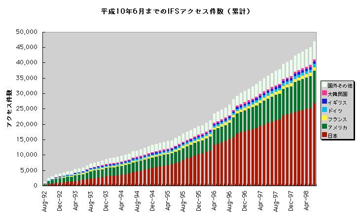
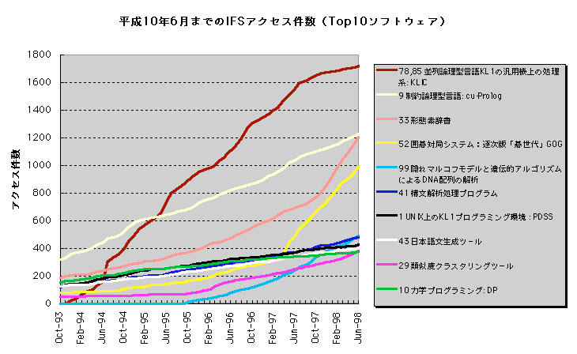

ICOTは、平成４年８月より、ICOT無償公開ソフトウェア(IFS)の 公開を開始しました。それ以降、世界中の数多くの方々より、 アクセスして頂いています。最近では、KLIC のアクセス件数 の伸びが目立っています。
下のグラフは、"Read-me"などのドキュメントを含むアクセス総数の 推移、およびアクセスの多い１０ソフトのアクセス件数の推移を示して います。
平成１０年６月末で"Read-me"などのドキュメントを含むアクセス総件数は、 約46,760件に達しています。 実際にプログラムを含むファイルのアクセスは、 約18,995件となっています。

